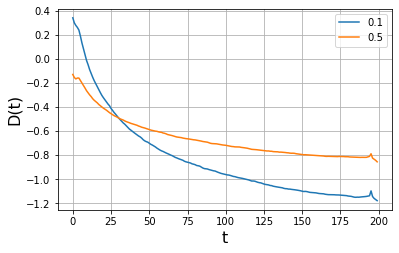

n_traj, max_t, exponents, models, dim = 6000, 200, np.array([0.1, 0.5]), [4], 2
trajs = create_trajectories(n_traj, max_t, exponents, models, dim, noise=None)
trajs = tensor(trajs[:, 2:].reshape((n_traj, dim, max_t)).transpose(0, 2, 1))Anomalous diffusion from normal diffusion
We show how to study anomalous diffusion by characterizing the Brownian motion properties through time.
Scaled Brownian motion
Generate the data
In this analysis, we use scaled Brownian motion (SBM) trajectories, which present an aging phenomenon that dicreases the diffusion coefficient with time.
Let’s predict the diffusion coefficient for these trajectories.
bs = 128
n_batch = np.ceil(n_traj/bs).astype(int)
batches = [trajs[i*bs:(i+1)*bs] for i in range(n_batch)]preds = [to_detach(learn_diff.model(xb.cuda()).squeeze()) for xb in batches]
preds = torch.cat(preds, axis=0)plt.figure(figsize=(6, 3.7))
plt.plot(preds[:n_traj//2].mean(axis=0), label=exponents[0])
plt.plot(preds[n_traj//2:].mean(axis=0), label=exponents[1])
plt.grid()
plt.legend()
plt.ylabel("D(t)", fontsize=16)
plt.xlabel("t", fontsize=16)Text(0.5, 0, 't')
file_name = "preds_sbm"
data_path = DATA_PATH/file_name
with open(data_path.with_suffix('.pkl'), 'wb') as f:
pickle.dump(preds, f, protocol=pickle.HIGHEST_PROTOCOL)Annealed transit time model
Generate the data
n_traj, max_t, sigma, gamma = 10000, 200, 1.16, 1.38
trajs, Ds = create_fixed_attm_trajs(n_traj, max_t, sigma, gamma)
trajs, Ds = tensor(trajs).transpose(2, 1), tensor(Ds)bs = 128
n_batch = np.ceil(n_traj/bs).astype(int)
batches = [trajs[i*bs:(i+1)*bs] for i in range(n_batch)]preds = [to_detach(learn_diff.model(xb.cuda().float()).squeeze()) for xb in tqdm(batches)]
preds = torch.cat(preds, axis=0)file_name = "preds_attm"
data_path = DATA_PATH/file_name
with open(data_path.with_suffix('.pkl'), 'wb') as f:
pickle.dump({'pred': preds, 'true': Ds}, f, protocol=pickle.HIGHEST_PROTOCOL)